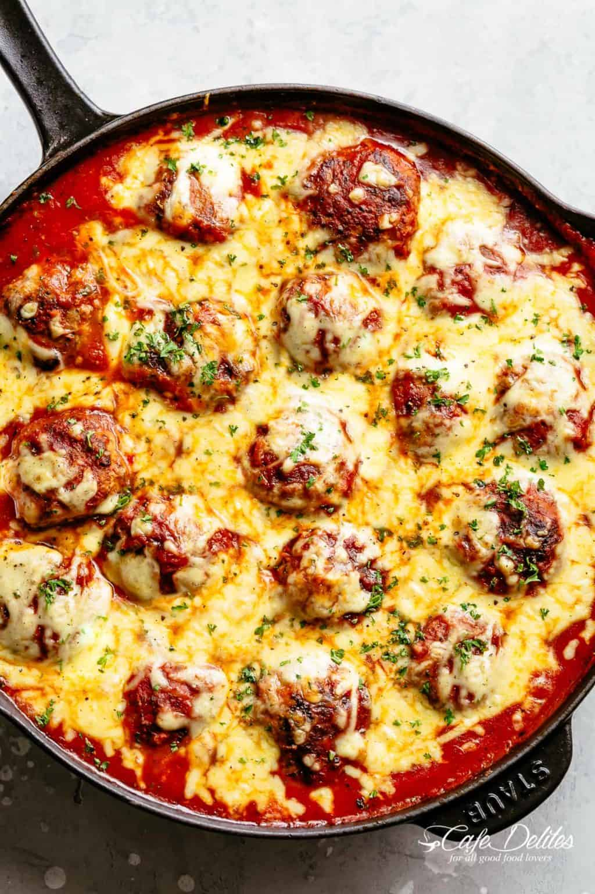

Cheesy Meatballs

Description
The best meatball recipe starts with the most tender meatballs, browned in a hot skillet to seal in the juices and get crispy, golden edges.
Soaking up rustic tomato sauce flavours underneath a golden blanket of melted mozzarella cheese, Cheesy Meatballs is an easy dinner recipe that will be a hit with your family!
Ingredients
- Meatballs
- 3 slices white bread crust removed
- 1/2 cup milk
- 17 oz ground beef
- 1 onion finely chopped
- 2 egg
- 1/2 cup fresh grated parmesan cheese
- Tomato Sauce
- 2 tablespoons olive oil divided
- 1 large onion finely chopped
- 4 garlic cloves minced
- 24 oz bottle of tomato sauce
- 1/4 cup of water
Steps
- Preheat oven grill on medium high heat.
- Combine bread and milk in a large bowl. Press the bread down. Set aside.
- Add all the meatball ingredients into the bowl with soaked bread and mix well.
- Roll about three tablespoons worth of meat mixture into a ball.
- Heat one tablespoon of olive oil in a large well-seasoned skillet. Put the meatballs and cook until golden.
- Put in the tomato sauce
- Cook and cover for 20 minutes